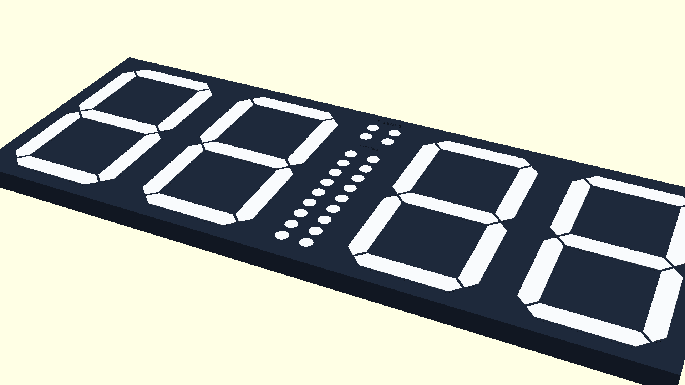
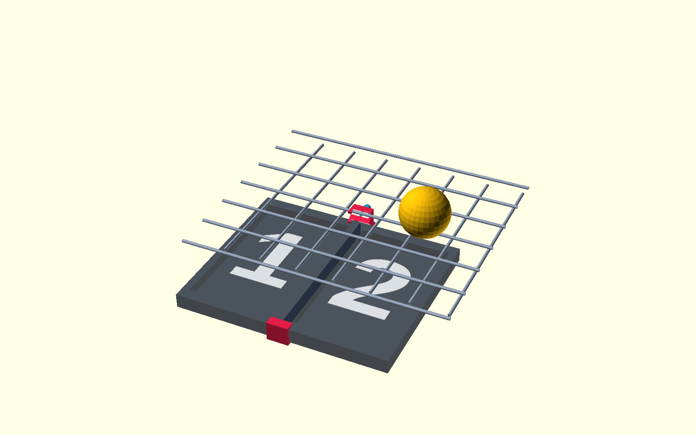
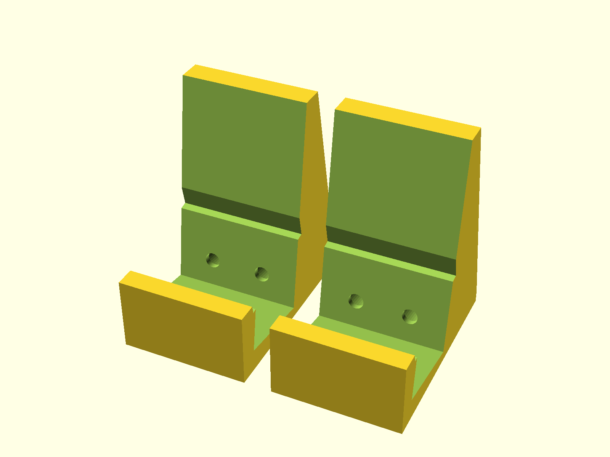
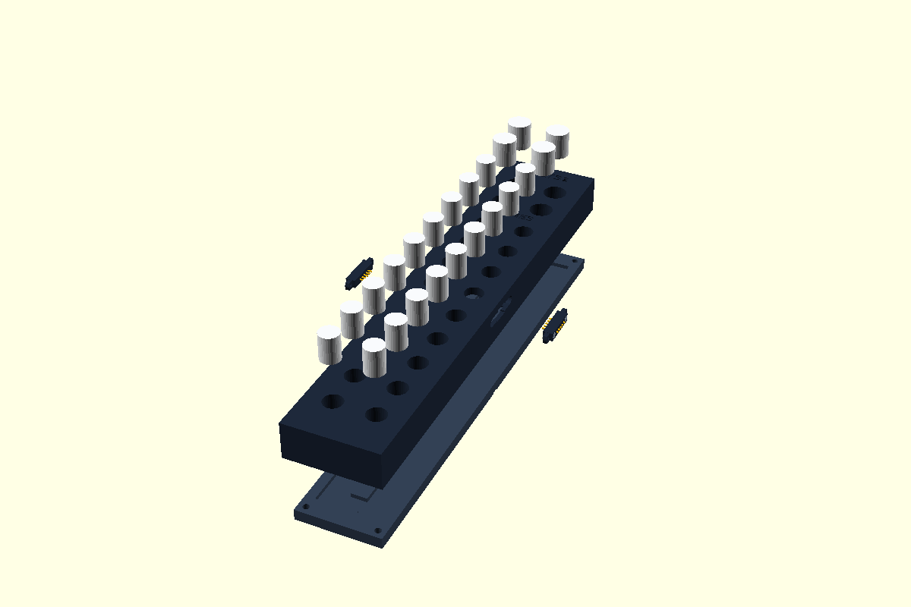

A professional, modular electronic scoreboard and ambient clock engineered for padel courts. Powered by ESP32, 136 addressable WS2813 LEDs (with dual-signal backup data redundancy), Bluetooth Low Energy, and modular 3D-printed snap housings.
🎾 The On-Court Problem
Padel rallies are explosive and fast-paced. Players constantly argue or lose track of scores, games, and side swaps. Existing commercial scoreboards are bulky, fragile, expensive, and require manual flipping.
💡 The Engineered Solution
An ultra-visible 136-LED scoreboard where the ESP32 acts as the single source of truth (Master). Dual-role BLE enables instantaneous racket remote clicks while continuously broadcasting official match states to Wear OS watches and web companions.
⚡ Zero-Lag BLE Remote🛡️ Court Mesh Protection🕒 Dual Clock Mode🌐 Web Bluetooth PWA

Modular 4-Digit Display + 24-LED Central Games & Sets Ladder136 LEDs TOTAL
Welcome everyone! This presentation covers the entire multidisciplinary engineering journey of our 7-Segment Padel Scoreboard and companion apps. We will explore how 3D parametric CAD, embedded C++ SPI DMA drivers, dual-role Bluetooth Low Energy, and modern Web Bluetooth PWAs converged into a cohesive court ecosystem.
Parametric 7-Segment Digit Housings: Built in OpenSCAD (7segment_pogo.scad). Features dedicated light-isolation diffuser channels, 4 LEDs per segment, and magnetic/pogo-pin side chaining.
Central Games & Sets Ladder: A dedicated 24-LED vertical column array (games_sets_pogo_snap_individual_dots.scad) displaying live game points (1–9) and set tallies for both teams.
Court Mesh Hook Bracket (Ball Impact Protection): An engineered hook bracket (panel_seam_u_hook_bracket) clamping digit seams and suspending the scoreboard behind the padel court's 50x50 mm steel wire fence. Incoming 120 km/h smash balls hit the wire, not the display.
Direct-Mount Desktop Cradle & Thumbscrews: Tabletop cradle with 8° backward viewing tilt (display_stand.scad) and ergonomic tool-free M3 thumbscrew knobs.

Mesh Hook Bracket

8° Cradle Stand
M3 Thumbscrews
We started with mechanical design because durability and visibility on a padel court are paramount. Notice the mesh hook bracket: a common failure of DIY scoreboards on courts is that a smash hits the display. By mounting behind the court fence, the steel wire absorbs all impact energy while the ultra-bright LEDs shine through unobstructed.
Phase 2 • Electronics & Power Topologies
LED Serial Bus & Microcontroller Hardware
03 / 12
Continuous 136-LED Serial Data Stream
All 5 modules are wired as one continuous addressable cascade driven from a single microcontroller pin (GPIO 2 MOSI):
Dedicated 3-wire DS1302 RTC keeps time even when powered down. The web companion app calibrates the clock with one touch using phone browser time.

24-LED Central Games (1..9) & Sets (1..2) Module Routing
Panel 0 Hardware Mapping Logic
Because physical ribbon cable routing reversed the segment sequence on Panel 0, a software translation array (panel0SegmentMap) standardizes physical LEDs to logical segments (A–G) with zero CPU penalty.
Notice our LED topology: 136 LEDs require proper power injection and clean data lines. Each digit contains 28 LEDs (4 LEDs per segment across 7 segments). We use the ESP32-C3 SuperMini as the primary choice due to its compact size, low power, and excellent SPI peripheral support.
Phase 3 • Embedded Firmware Engineering
The Critical Breakthrough: Hardware SPI DMA vs. BLE
04 / 12
❌ The Real-World Failure: Bit-Banging Neopixels
Standard Arduino NeoPixel libraries rely on precise cycle-counted assembly loops (bit-banging at 800 kHz). However, the ESP32 Bluetooth Low Energy radio generates high-priority hardware interrupts.
Result: Whenever the BLE radio transmitted, the timing collapsed, causing random LED flashing, color artifacts, and dropped frames.
✅ The Engineering Solution: Hardware SPI DMA
We abandoned bit-banging and re-architected the driver to use the ESP32-C3 Hardware SPI MOSI peripheral with Direct Memory Access (DMA):
Each WS2813 bit is encoded as 3 or 4 SPI clock bits into a DMA buffer.
The hardware DMA controller shifts the bits to GPIO 2 autonomously.
100% immune to BLE radio interrupts, zero CPU overhead, rock-solid stability!
// Hardware SPI DMA WS2813 Bit EncodingvoidpushSpiDmaFrame(uint8_t* rgbBuffer, size_t ledCount) {
for (size_t i = 0; i < ledCount; i++) {
// Expand 24-bit GRB to SPI DMA pulses for WS2813 (T0H / T1H)
encodeWs2813Byte(rgbBuffer[i*3 + 1], &dmaBuf[...]); // G
encodeWs2813Byte(rgbBuffer[i*3 + 0], &dmaBuf[...]); // R
encodeWs2813Byte(rgbBuffer[i*3 + 2], &dmaBuf[...]); // B
}
// Asynchronous DMA transmission - no CPU wait, immune to BLE
spi_device_queue_trans(spiHandle, &dmaTrans, portMAX_DELAY);
}
Why WS2813 & Dual-Signal Backup Line
We chose the WS2813 strip because it incorporates a dual-signal backup line: if any single LED fails, the signal automatically bypasses it so all downstream digits stay lit! Furthermore, WS2813 requires a >280 µs reset pulse (instead of 50 µs), which we solved by padding the DMA transmission frame with trailing zero bytes.
This was one of the most critical bugs we encountered during court testing. As soon as players started clicking their Bluetooth remotes rapidly, the scoreboard display would flicker violently. Switching to SPI DMA completely eliminated the problem because the hardware DMA controller pushes the waveform without CPU intervention.
Phase 4 • Embedded Logic & Rules Engine
The Scoreboard is Always the Master
05 / 12
Single Source of Truth: The ESP32 maintains all match rules, points, games, sets, and side swaps in Non-Volatile Storage (NVS flash). Connected smartwatches and apps mirror this state; they never compute scores independently.
Official Padel Logic: Supports Golden Point (Punto de Oro) vs. Advantage (Ad), 6 vs. 9 games per set, best-of-1 vs. best-of-3 sets, and Tiebreak at 6–6 (with dedicated white tb and Stb badges).
30-Step Historical Undo Stack: Every point push saves full match state. Misclicks during heated games can be instantly reverted via double-clicking the remote or tapping Undo on the watch/app.
Court Side Swap Calculation: Automates side-change indicators on odd game sums (1, 3, 5...) and handles display digit swapping when players switch ends.
LIVE ENGINE SIMULATORSCOREBOARD MODE
TEAM 1
00
GAMES
0 - 0
SETS
0 - 0
TEAM 2
00
Try scoring above! It transitions: 00 → 15 → 30 → 40 → Game Won.
Why did we make the ESP32 the master instead of the mobile app or watch? Because players have different phones, batteries die, or Bluetooth can momentarily disconnect. By putting the rules engine on the scoreboard microcontroller itself, the match state is indestructible and never desynchronizes.
Phase 5 • Wireless Networking
Dual-Role BLE Architecture & GATT Protocol
06 / 12
Dual-Role BLE Subsystem (NimBLE)
The ESP32 operates simultaneously in two distinct Bluetooth roles without radio contention:
BLE Central (HID Client): Connects to the Xiaomi / YI Shutter Remote (XYLY01) over HID Service 0x1812, decoding 3-byte shutter payloads with 380 ms double-click timing.
BLE Peripheral (GATT Server): Advertises as "Padel Display" (UUID 0x4FAF), accepting connections from smartwatches, phones, and web browsers.
Xiaomi Remote Button Mapping
• Big Shutter Button (0x40): Team 1 Blue Point (+1)
• Small Mode Button (0x80): Team 2 Red Point (+1)
• Double-Click (either button within 380ms): Instant UNDO
GATT Packet Specification (Char UUID: 0xBEB5)
// 1. Live Score Notification (Server -> Client)"1530,0,1,2,0,0,0"
│ │ │ │ │ │ └── In Tiebreak (1 = Active)
│ │ │ │ │ └──── Team 2 Sets Won (0..2)
│ │ │ │ └────── Team 1 Sets Won (0..2)
│ │ │ └──────── Team 2 Games Won (0..9)
│ │ └────────── Team 1 Games Won (0..9)
│ └──────────── Court Side Swapped (0 = Normal, 1 = Swapped)
└────────────── Points: T1 "15", T2 "30"
// 2. Master Config Broadcast (Bidirectional)"CFG,GP=0,SETS=2,GAMES=6,TB=1,BRT=180,IDLE=300000"// 3. Control Commands (Client -> Server)"CMD,P1"// Increment Team 1"CMD,P2"// Increment Team 2"CMD,UNDO"// Revert last point"CMD,SWAP"// Toggle court side display"TIME,14:35:00"// Sync DS1302 Real-Time Clock
Operating as both BLE Central and Peripheral on a single microcontroller was a major milestone. Most hobbyist boards only do one or the other. We used NimBLE-Arduino, which is far more memory-efficient than the standard Bluedroid stack and supports simultaneous client/server topology reliably.
Phase 6 • Companion Web Application
Zero-Install Mobile Controller PWA
07 / 12
A court administrator or player shouldn't have to download a 100MB native app from the App Store just to change scoreboard settings. We built index.html using the Web Bluetooth API.
📱 Three Core Functional Tabs
• Court Tab: Real-time mirrored score digits, oversized one-touch scoring buttons, side swap, undo, and mode toggle.
• Display Tab: Smooth brightness slider (0–255), auto-idle sleep timeout selector (1m–30m), and one-tap Sync Phone Time to RTC.
• Rules Tab: Configure match presets (Golden Point vs Ad, Sets, Games) directly stored to ESP32 Flash memory.
✨ Progressive Web App (PWA) Offline Engine
Equipped with sw.js Service Worker, manifest.json, and crisp vector icons. Can be installed directly to iOS and Android home screens and works 100% offline at remote court facilities.
🎨 Apple-Style Dark & Light Themes
Features instant anti-flash localStorage persistence, high-contrast daylight visibility mode for direct sunlight on outdoor courts, and sleek OLED dark mode for night matches.
⚡ Debounced Bluetooth Writing
Dragging a continuous brightness or color slider can flood the BLE transport buffer. We implemented a 60ms request-animation-frame debounce queue, ensuring smooth UI slider movement without dropped Bluetooth packets.
The Web Bluetooth API gives us the superpowers of a native app directly in Chrome, Edge, or Bluefy on iOS. Anyone can scan a court QR code, tap 'Connect', and take full control of the display without installing anything or creating an account.
Phase 7 • Wearables & Cloud Spectators
Wear OS Smartwatch & Spectator Web App
08 / 12
⌚ Wear OS Smartwatch Interface
For players who prefer not to mount a remote on their racket or wristband, the Wear OS watch app provides tactile, glanceable wrist interaction:
Full touch screen scoring (+1 Team 1 / +1 Team 2).
Distinct haptic vibrations for points, games, and set wins.
Automatic dynamic rule mirroring via CMD,REQ queries.
🌐 Spectator Live Match Companion
Spectators outside the court or at the clubhouse can view the match in real time at padelpunten.netlify.app. Connects via lightweight REST functions to mirror live court action without interfering with court Bluetooth connections.
🎯 The Complete 4-Tier Ecosystem
How each participant interacts with the Master Scoreboard:
[ On Court ]
• Player 1 (Racket): Xiaomi Shutter Clicker (BLE Central)
• Player 2 (Wrist) : Wear OS Watch App (BLE Peripheral)
[ Scoreboard ]
• Court Display : ESP32 Master (Single Source of Truth)
[ Court Side ]
• Admin / Coach : Web Bluetooth PWA (index.html)
[ Spectators ]
• Clubhouse / Web : Spectator Web Observer (Netlify REST)
Unified Color Standard Across All Devices
Team 1: Electric Blue (#00d2ff / #1E88E5) Team 2: Vivid Red (#ff3366 / #E53935) Sets & Ladder: Golden Amber (#ffb300)
By offering both the physical racket clicker and the smartwatch app, players can choose whatever feels most natural. The spectator app was an added bonus: parents and tournament fans can watch the score progression from the court-side cafe.
Phase 8 • Maintenance & Field Deployments
Wireless Browser-Based OTA Updates
09 / 12
The Field Update Problem
Once scoreboards are bolted behind court fences or mounted on walls, unscrewing panels, carrying a laptop to the court, and connecting USB cables to flash new firmware is totally impractical.
The Solution: Web Bluetooth OTA Flasher (ota.html)
We engineered a wireless OTA flashing system running entirely inside the web browser via Web Bluetooth. Court managers simply open ota.html, select the latest binary release, and flash wirelessly in seconds.
Chunked MTU packet slicing (512-byte blocks).
Dual ESP32 partition fail-safe (rolls back on CRC mismatch).
Live progress percentage and byte transfer speed meter.
// Web Bluetooth OTA Chunk Transfer Pipelineasync functionsendFirmwareChunk(binData, offset, chunkSize) {
const slice = binData.slice(offset, offset + chunkSize);
// Write packet to OTA GATT Characteristic with responseawait otaCharacteristic.writeValueWithResponse(slice);
// Update visual progress barconst percent = Math.round((offset / binData.byteLength) * 100);
renderOtaProgress(percent);
}
For continuous integration and automated developer builds, a Python script connects over Bleak to automate firmware updates straight from command line.
OTA firmware updates via Web Bluetooth are a game changer for field maintenance. If we add a new game mode or tweak the rules, we just push the compiled bin to GitHub, and anyone can update their court display right from their mobile browser.
Phase 9 • Commercialization & Virtual Testing
Interactive Web Simulator & Showcase
10 / 12
Before mass 3D printing and assembling units, we needed a way to test player interactions, validate rule comprehension, and gather market feedback. We developed showcase.html.
🎮 Full Virtual Scoreboard & Clicker Mockup
Replicates the exact physical hardware inside the browser: 7-segment digital displays, 24-LED games ladder, and a virtual Xiaomi racket clicker responding to single and double clicks.
📊 Community Pricing & Feature Discovery Engine
An integrated feedback survey where padel club owners and players select their preferred configurations (DIY Kit, Fully Assembled, Tournament Dual-Board) and share what price they are willing to pay.
Demonstrates how after 5 minutes of court inactivity, the scoreboard smoothly dims its match score and crossfades into an ambient 24-hour digital wall clock.
The showcase page helped bridge the gap between pure engineering and product validation. Club owners could play with the virtual clicker, understand the Golden Point mechanics, and immediately see why this beats traditional scoreboards.
Phase 10 • Git History & Field Iterations
Real-World Engineering Iterations
11 / 12
🔀
Court Side Swap Bug
Challenge: When teams swapped ends, touch targets on the web app inverted relative to the physical scoreboard.
Fix: Standardized logical vs. physical indices; touch inputs now track teams regardless of physical court position.
Commit: 85f3d6f
🏷️
Tiebreak Badging
Challenge: Players in tiebreak mode at 6–6 didn't realize points were rally counts (1..7) instead of normal tennis points (15, 30).
Fix: Added high-visibility white tb and Stb (Super Tiebreak) badges on both physical display and app.
Commit: 067e33a
🎚️
Brightness Slider Flooding
Challenge: Rapidly sliding the brightness bar saturated the BLE UART buffer, triggering watchdog timeouts.
Fix: Implemented a 60ms debounce timer on slider input and restored backward-compatible CFG,BRT packets.
Commit: 985b6fd
🌈
Smooth Ambient Clock
Challenge: Static clock numbers felt sterile during idle clubhouse hours.
Fix: Added smooth 6-second color crossfading and dedicated customizable clock palette options via Web Bluetooth.
Commit: f2769cf
🔋
Racket Strap & Battery Mount
Challenge: Remote clicker would fly out of pockets during smashes.
Fix: Modeled snap-in racket lanyard and wrist strap holders (remote_strap_holder.scad).
Commit: 285b92c
🧩
Snap-Fit 3D Print Tolerances
Challenge: Segment diffusers were either too loose or cracked under force.
Fix: Calibrated snap-bead interference to 0.25 mm with 45° lead-in chamfers for reliable tool-free assembly.
Commit: cbdffa0
Every great hardware product is shaped by real-world testing. This slide captures the authentic development iterations directly from our git commit history: from fixing BLE buffer overflows to adding the white tiebreak badges and optimizing 3D print tolerances.
Conclusion & Future Vision
Architecture Summary & Future Roadmap
12 / 12
Engineering Stack at a Glance
Mechanical CAD
OpenSCAD parametric 3D snap housings
Microcontroller
ESP32-C3 SuperMini (RISC-V 160MHz)
LED Driver
Hardware SPI MOSI with DMA (136 LEDs)
Bluetooth Stack
NimBLE dual-role (Central HID + Peripheral GATT)
Web Companions
Web Bluetooth API, Vanilla JS, Service Worker PWA
Why the System Succeeded
• Single Source of Truth: ESP32 master guarantees zero state desync.
• Zero Barrier to Entry: Web Bluetooth means no app store friction.
• Court-Proof Engineering: Behind-the-mesh mounting and SPI DMA immunity.
🚀 Future Roadmap
Multi-Court Tournament Mesh (ESP-NOW): Linking 8 court scoreboards together to a central clubhouse master leaderboard.
Voice-Activated Point Scoring: Offline keyword spotting for hands-free scoring (e.g. "Point Team Blue").
Automated Video Replay Clip Trigger: Remote double-click bookmarks video timestamps on court IP cameras for highlight reels.
Thank You! Questions & Discussion
Explore the live apps and open-source CAD models in the repository.
To wrap up: this project combined mechanical 3D design, low-level microcontroller drivers, wireless BLE HID, and modern Web Bluetooth into a bulletproof court companion. We're excited about the future possibilities like multi-court tournament networking and automated replay bookmarks! Thank you!